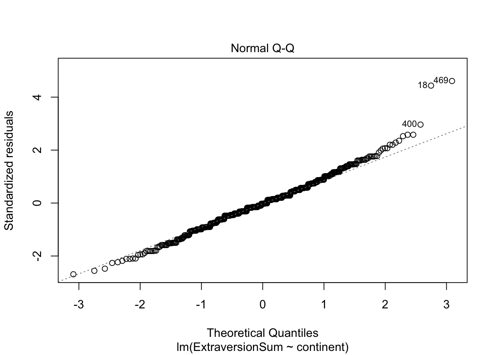
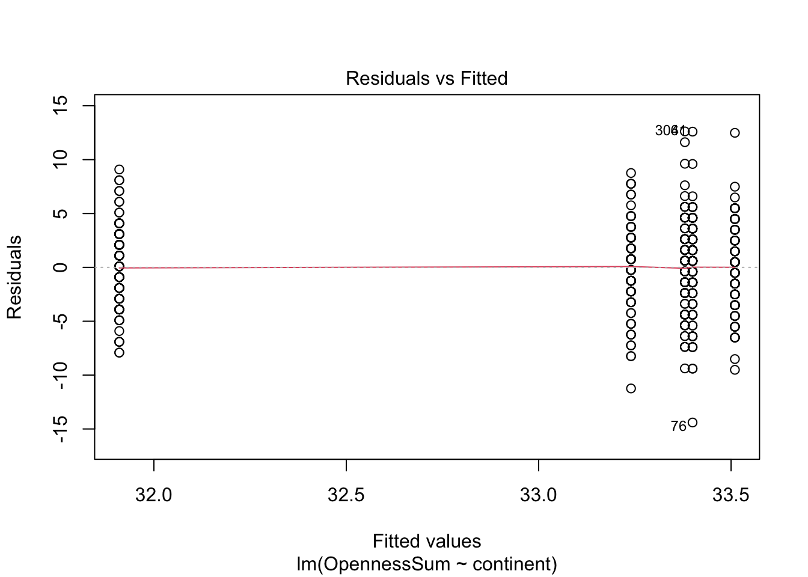
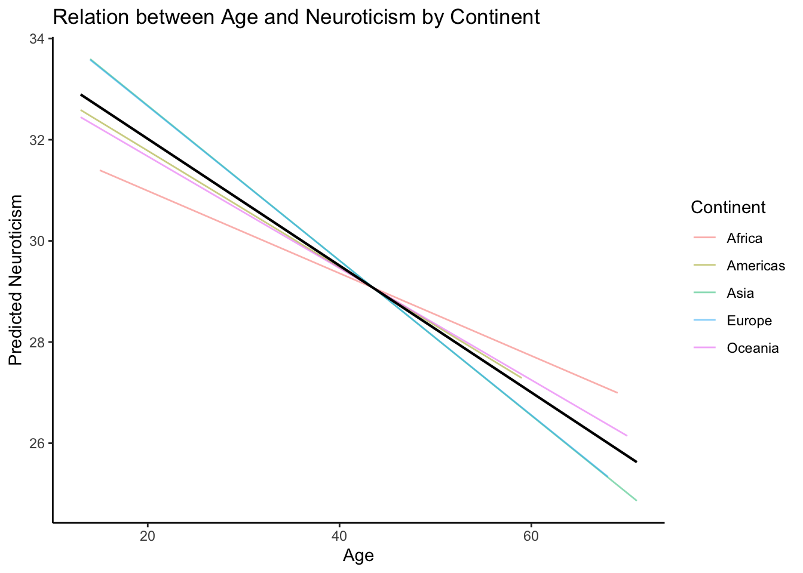

5 Analysis of Variance (ANOVA)
ANOVA is appropriate if you would like to test whether mean differences across three or more groups are significantly different from each other. This section will go over two types of between-subjects ANOVAs, called one-way ANOVA and factorial ANOVA. If you’re interested in doing a within-subjects analysis with repeated measures, we encourage you to review the section in this handout on multilevel modeling.
Note: Regression and ANOVA are equivalent analyses, although its common to use ANOVA when looking at exclusively categorical predictors. The example used in this section of the handout for one-way ANOVA is equivalent to the example in the regression section. Throughout this section, we will run ANOVA using aov(), but they can also be run with lm(). We encourage you to review the regression section for interpretation of the lm() output.
For our first example, let’s say we want to know if there are any significant mean differences in Openness across the groups in our continent variable. We call this analysis a one-way ANOVA, because we have a single categorical predictor (in this case, with five levels) and a single continuous outcome. Our null hypothesis is:
\[\mu_{Americas} = \mu_{Europe} = \mu_{Asia} = \mu_{Europe} = \mu_{Oceania}\]
And our alternative hypothesis is at least one set of these means is not equal. The ANOVA informs us that there are significant mean differences among our groups, but does not provide information on where those group differences are (called an omnibus test). After running the analysis, we will use a follow up analysis called a post-hoc test to figure out which group comparisons are significantly different.
5.1 Assumptions of ANOVA
You can think of the ANOVA as an extension of a t-test, and we recommend reviewing the section on t-test assumptions. We will discuss them again here and use many of the same techniques, with a focus on the residuals of the analysis. While there won’t be a technical explanation of what residuals are and why we want them to be normally distributed, we provide a practical overview of some graphs you can use to check ANOVA assumptions:
5.1.1 Normality of residuals
Just like with t-tests, we want to examine the normality of our data. Although for t-tests we only examined normality of our raw data, we want to examine the normality of the residuals of our analysis. Below is a QQ-plot similar to those we constructed for t-tests, except this one plots the residuals of our analysis instead of a raw distribution of scores. The interpretation is the same– we want the points to hug the diagonal line as closely as possible. Here, we see some deviations at both tails of the plot.
As with t-tests, some solutions may be to try data transformations on the variables– often, making the raw distributions more normal leads to a more normal residual distribution. We can also rely on properties of the CLT and say we have sufficient sample size to move forward. T-test and ANOVA are robust to normality violations, which means that they still return mostly accurate results even if our data aren’t quite normal.
##QQplot of residuals
plot(lm(ExtraversionSum ~ continent, data=big5), which = 2)
5.1.2 Linearity of residuals
Another assumption of these tests is that the relationships among variables are linear. The plot below is a residuals vs fitted plot. It plots the predictions (fitted values) your model made for each individual against the residuals (the differences between an individual’s actual value on Openness and what the ANOVA predicted that value to be). For linearity, we want to make sure the red line in this plot is straight and centered at 0.
##Residuals vs fitted plot
plot(lm(OpennessSum ~ continent, data=big5), which = 1)
5.1.3 Homogeneity of variance (of residuals)
We can also use the residuals vs fitted plot to assess whether the groups have equal variances. This time, we’re examining the vertical spread of the residuals around the red line. In this case, each group has similar spread. Ideally, the residuals vs fitted plot should look like a random cloud of points, with no clear patterns or clustering. The clusters you see in this plot are because we have a single categorical variable, so the model only makes five estimates (a mean estimate for each continent).
Click here for more examples of what a residuals vs fitted plot should (and shouldn’t) look like.
big5 %>%
group_by(continent)%>%
summarize(var = var(OpennessSum))##Residuals vs fitted plot
plot(lm(OpennessSum ~ continent, data=big5), which = 1)
5.2 Run an one-way ANOVA
The code below runs a one-way ANOVA. The structure of this code will be the same as it is for the t-test, where the formula is aov(outcome~grouping_variable)
oneway_anova<-aov(OpennessSum ~ continent, data=big5)
summary(oneway_anova)## Df Sum Sq Mean Sq F value Pr(>F)
## continent 4 177 44.29 2.883 0.0222 *
## Residuals 495 7603 15.36
## ---
## Signif. codes: 0 '***' 0.001 '**' 0.01 '*' 0.05 '.' 0.1 ' ' 1If you see major issues with assumptions, there is code below for a few alternate options to run your analysis, such as a correction analogous to Welch’s correction for t-tests, the Huber White Robustness correction, and code for a nonparametric version of ANOVA. While the mechanics of these alternatives won’t be discussed here, we encourage you to learn more about these options if your project data has severe deviations from the assumptions of ANOVA. Choosing to use an ANOVA regardless of assumption violations can lead to untrustworthy results.
library(car) # for Anova
library(lmPerm) # for permutation test
##Issues with HOV- ANOVA with Welch's correction
oneway.test(OpennessSum ~ continent, data = big5, var.equal = FALSE)##
## One-way analysis of means (not assuming equal variances)
##
## data: OpennessSum and continent
## F = 3.1272, num df = 4.00, denom df = 247.32, p-value = 0.01557##Issues with normality and HOV
##Huber White Robust Correction
oneway_anova<-aov(OpennessSum ~ continent, data=big5)
Anova(oneway_anova, white.adjust = TRUE) # notice for this we need to use the Anova() function, not anova() or aov()## Coefficient covariances computed by hccm()##Permutation test
anova_perm<- lmp(OpennessSum~continent, data = big5)## [1] "Settings: unique SS "anova(anova_perm)## Analysis of Variance Table
##
## Response: OpennessSum
## Df R Sum Sq R Mean Sq Iter Pr(Prob)
## continent1 4 177.1 44.287 5000 0.0034 **
## Residuals 495 7603.0 15.360
## ---
## Signif. codes: 0 '***' 0.001 '**' 0.01 '*' 0.05 '.' 0.1 ' ' 15.3 Run a Post-hoc Analysis
Note that a post-hoc analysis is only useful if the omnibus ANOVA returns a significant result. If you run a post-hoc analysis on a nonsignificant ANOVA, any pairwise comparisons from a post-hoc analysis will also be nonsignificant.
Since our omnibus ANOVA is significant, we know that there is a significant mean difference among at least one pair of five continents. The simplest way to look at the pairwise comparisons of each group would be to use a series of t-tests examining the groups. However, when we do multiple statistical tests, we inflate our chances for type 1 error (a false positive result). Using an appropriate post-hoc test allows us look at pairwise comparisons while controlling our type one error rate.
The code below runs a Tukey’s Honestly Significant Difference test (more commonly refered to as a Tukey test). This is a type of post-hoc test that will return every possible pairwise comparison in your data with signficance values that have been corrected for multiple testing. You can interpret the p-values from this output the same way you would interpret significance for a t-test, with a p < .05 cutoff.
TukeyHSD(oneway_anova)## Tukey multiple comparisons of means
## 95% family-wise confidence level
##
## Fit: aov(formula = OpennessSum ~ continent, data = big5)
##
## $continent
## diff lwr upr p adj
## Americas-Africa -0.16 -1.6774539 1.3574539 0.9984808
## Asia-Africa -1.49 -3.0074539 0.0274539 0.0571107
## Europe-Africa -0.02 -1.5374539 1.4974539 0.9999996
## Oceania-Africa 0.11 -1.4074539 1.6274539 0.9996535
## Asia-Americas -1.33 -2.8474539 0.1874539 0.1170761
## Europe-Americas 0.14 -1.3774539 1.6574539 0.9991013
## Oceania-Americas 0.27 -1.2474539 1.7874539 0.9885310
## Europe-Asia 1.47 -0.0474539 2.9874539 0.0628077
## Oceania-Asia 1.60 0.0825461 3.1174539 0.0329635
## Oceania-Europe 0.13 -1.3874539 1.6474539 0.9993291We can see here that only one pairwise comparison meets our p < .05 cutoff. Oceania and Asia have a significant mean difference of 1.60 on Openness (this means that the first group, Oceania, has a mean that is 1.6 higher than average Openness for Asia).
Below is an example writeup for a one-way ANOVA and Tukey test post-hoc analysis. In order for your writeup, you will need information from your aov() summary, your Tukey test results, and some descriptive statistics:
big5 %>%
group_by(continent)%>%
summarize(mean= mean(OpennessSum),
sd = sd(OpennessSum),
n = n())summary(oneway_anova)## Df Sum Sq Mean Sq F value Pr(>F)
## continent 4 177 44.29 2.883 0.0222 *
## Residuals 495 7603 15.36
## ---
## Signif. codes: 0 '***' 0.001 '**' 0.01 '*' 0.05 '.' 0.1 ' ' 1TukeyHSD(oneway_anova)## Tukey multiple comparisons of means
## 95% family-wise confidence level
##
## Fit: aov(formula = OpennessSum ~ continent, data = big5)
##
## $continent
## diff lwr upr p adj
## Americas-Africa -0.16 -1.6774539 1.3574539 0.9984808
## Asia-Africa -1.49 -3.0074539 0.0274539 0.0571107
## Europe-Africa -0.02 -1.5374539 1.4974539 0.9999996
## Oceania-Africa 0.11 -1.4074539 1.6274539 0.9996535
## Asia-Americas -1.33 -2.8474539 0.1874539 0.1170761
## Europe-Americas 0.14 -1.3774539 1.6574539 0.9991013
## Oceania-Americas 0.27 -1.2474539 1.7874539 0.9885310
## Europe-Asia 1.47 -0.0474539 2.9874539 0.0628077
## Oceania-Asia 1.60 0.0825461 3.1174539 0.0329635
## Oceania-Europe 0.13 -1.3874539 1.6474539 0.9993291A one-way ANOVA examining mean differences in Openness across continents returned a significant result, F(4,495) = 2.88, p = .02. A post-hoc Tukey test suggests a significant mean difference in Openness between Oceania (M = 33.5,SD = 3.78) and Asia (M = 31.9,SD = 3.69), p = .03. All other pairwise comparisons were nonsignficant.
Note: Just because results are not significant does not mean they’re not worth reporting! With a large amount of results like in this analysis, it is much easier to include a table rather than write everything out in the writeup.
Another popular test for multiple comparisons is the Bonferroni correction, which creates a new p-value cutoff by dividing the normal p value cutoff (.05) by the number of tests you want to run. In the example above, we ran 10 pairwise comparisons. Let’s calculate a new cutoff using Bonferroni’s criterion.
.05/10## [1] 0.005If we chose to use Bonferroni’s correction instead of a Tukey test, we would not say a result is significant unless it meets a new cutoff of p < .005. While it’s easy to implement and useful to know, many consider the Bonferroni correction to be too stringent.
These are just two examples of possible post-hoc tests you can use to interpret the results of an ANOVA. Some may be more appropriate than others based on your research question, and some may be more widely used in some subfields compared to others. We won’t exhaust post-hoc tests here, but make sure you’re using something to correct for multiple comparisons!
5.4 Run a factorial ANOVA
Many of you will be interested in running an ANOVA with multiple categorical variables, an analysis we call factorial ANOVA. We refer to the design of a factorial ANOVA by the number of predictor variables we have, and the number of levels within each variable. In the example below, we are going to predict average neuroticism from two predictor variables, continent and gender. Since continent has 5 levels (Oceania, Asia, Americas, Europe, Africa) and gender has three levels (Male, Female, Other), we would call this analysis a 5x3 factorial ANOVA.
In factorial designs, we are often interested in the interaction between our two predictor variables. That is, we’re not just interested in the impact of continent and gender separately on average neuroticism, but also whether the two groups are dependent on each other. For instance, maybe being from America predicts higher average neuroticism, but only for males. Interaction terms help us understand these nuances about how our predictor variables affect each other. For more information on interactions, review the Multiple Regression section of the handout.
The code for the analysis is below. In the formula for aov(), we’ve included the gender variable separated from the continent variable by an asterisk (*). This is shorthand to tell R to include both variables in the analysis, as well as their interaction term.
twoway_anova<-aov(NeuroSum ~ continent*gender, data=big5)
summary(twoway_anova)## Df Sum Sq Mean Sq F value Pr(>F)
## continent 4 513 128.18 2.738 0.02826 *
## gender 1 288 288.40 6.160 0.01340 *
## continent:gender 4 632 157.88 3.373 0.00975 **
## Residuals 489 22892 46.81
## ---
## Signif. codes: 0 '***' 0.001 '**' 0.01 '*' 0.05 '.' 0.1 ' ' 1
## 1 observation deleted due to missingness##alternative but identical formula specification:
example2<-aov(NeuroSum ~ continent+gender+continent:gender, data=big5)
summary(example2)## Df Sum Sq Mean Sq F value Pr(>F)
## continent 4 513 128.18 2.738 0.02826 *
## gender 1 288 288.40 6.160 0.01340 *
## continent:gender 4 632 157.88 3.373 0.00975 **
## Residuals 489 22892 46.81
## ---
## Signif. codes: 0 '***' 0.001 '**' 0.01 '*' 0.05 '.' 0.1 ' ' 1
## 1 observation deleted due to missingnessWe see from our results that we have three significant effects– the main effect of continent is significant, the main effect of gender is significant, and the interaction term is significant. IMPORTANT: When we have a significant interaction term, we do not want to interpret the main effects of our analysis, because they will always misrepresent some aspect of our results. Let’s visualize the interaction and see what happens if we try to interpret main effects.
##Rename gender variable levels for graph legend
big5$Gender<- as.factor(big5$gender)
levels(big5$Gender) <- c("Male","Female","Other")
##summarize means for plot
plotdat<- big5%>%
group_by(continent, Gender) %>%
summarise(groupm = mean(NeuroSum))
##graph means
ggplot(data=subset(plotdat, !is.na(Gender)),
aes(x = continent, y = groupm, color = Gender))+
geom_line(aes(group = Gender)) +
geom_point()+
ggtitle("Neuroticism Across Continent and Gender")+ ##title
labs(x= "Continent", y="Average Neuroticism")+
theme_classic()
Here is average neuroticism of both groups plotted together on a single line graph. From here, it becomes clear that the interpretations of the main effects of our analysis become inaccurate when there is an interaction term. When we interpret a main effect, we do not take into account any other groups in the analysis. Let’s look at the means across the male and female levels of our gender variable:
mean(big5$NeuroSum[big5$gender == 1], na.rm = TRUE)## [1] 30.28788mean(big5$NeuroSum[big5$gender == 2], na.rm = TRUE)## [1] 31.80201If we interpret the main effect of gender on neuroticism, we might conclude that female participants have higher average neuroticism than males. However, if we look at our interaction graph, that is not always correct! Men have higher neuroticism scores in the Americas. That is to say, the effect of gender on average neuroticism DEPENDS on the continent variable.
5.4.1 Simple Main Effects Analysis
Disclaimer: Simple main effects analysis requires recalculating some values from different portions of output. Some basic code is provided here, but we recommend reviewing the mechanics of ANOVA (e.g., the different sums of squares values, what the F ratio is) if you choose to conduct these!
To assess a significant interaction, we can follow up with a simple main effects analysis, where we test one variable at each level of the other variable. In the code below, I subset the dataset to each of the five levels of continent, then run one-way anovas predicting average neuroticism from gender.
##Create five data subsets
Amer <- big5[big5$continent == "Americas",]
Euro <- big5[big5$continent == "Europe",]
Ocean <- big5[big5$continent == "Oceania",]
Afr <- big5[big5$continent == "Africa",]
Asia <- big5[big5$continent == "Asia",]
##Run one-way anovas for each subset
SME1<- lm(NeuroSum ~ gender, data = Amer)
SME2<- lm(NeuroSum ~ gender, data = Euro)
SME3<- lm(NeuroSum ~ gender, data = Ocean)
SME4<- lm(NeuroSum ~ gender, data = Afr)
SME5<- lm(NeuroSum ~ gender, data = Asia)
summary(SME1)##
## Call:
## lm(formula = NeuroSum ~ gender, data = Amer)
##
## Residuals:
## Min 1Q Median 3Q Max
## -14.505 -5.275 -0.045 4.955 17.955
##
## Coefficients:
## Estimate Std. Error t value Pr(>|t|)
## (Intercept) 34.964 2.147 16.286 <2e-16 ***
## gender -2.459 1.250 -1.967 0.052 .
## ---
## Signif. codes: 0 '***' 0.001 '**' 0.01 '*' 0.05 '.' 0.1 ' ' 1
##
## Residual standard error: 6.485 on 97 degrees of freedom
## (1 observation deleted due to missingness)
## Multiple R-squared: 0.03837, Adjusted R-squared: 0.02846
## F-statistic: 3.871 on 1 and 97 DF, p-value: 0.05199summary(SME2)##
## Call:
## lm(formula = NeuroSum ~ gender, data = Euro)
##
## Residuals:
## Min 1Q Median 3Q Max
## -15.9677 -4.8143 0.6346 5.0323 13.0323
##
## Coefficients:
## Estimate Std. Error t value Pr(>|t|)
## (Intercept) 28.559 2.285 12.496 <2e-16 ***
## gender 2.205 1.351 1.631 0.106
## ---
## Signif. codes: 0 '***' 0.001 '**' 0.01 '*' 0.05 '.' 0.1 ' ' 1
##
## Residual standard error: 6.56 on 98 degrees of freedom
## Multiple R-squared: 0.02644, Adjusted R-squared: 0.0165
## F-statistic: 2.661 on 1 and 98 DF, p-value: 0.106summary(SME3)##
## Call:
## lm(formula = NeuroSum ~ gender, data = Ocean)
##
## Residuals:
## Min 1Q Median 3Q Max
## -14.306 -5.737 -1.306 5.263 15.263
##
## Coefficients:
## Estimate Std. Error t value Pr(>|t|)
## (Intercept) 26.167 2.411 10.854 <2e-16 ***
## gender 2.570 1.426 1.802 0.0745 .
## ---
## Signif. codes: 0 '***' 0.001 '**' 0.01 '*' 0.05 '.' 0.1 ' ' 1
##
## Residual standard error: 6.92 on 98 degrees of freedom
## Multiple R-squared: 0.03209, Adjusted R-squared: 0.02221
## F-statistic: 3.249 on 1 and 98 DF, p-value: 0.07455summary(SME4)##
## Call:
## lm(formula = NeuroSum ~ gender, data = Afr)
##
## Residuals:
## Min 1Q Median 3Q Max
## -18.9714 -6.4769 -0.2242 5.0286 16.5231
##
## Coefficients:
## Estimate Std. Error t value Pr(>|t|)
## (Intercept) 27.466 2.758 9.958 <2e-16 ***
## gender 1.505 1.606 0.938 0.351
## ---
## Signif. codes: 0 '***' 0.001 '**' 0.01 '*' 0.05 '.' 0.1 ' ' 1
##
## Residual standard error: 7.659 on 98 degrees of freedom
## Multiple R-squared: 0.008889, Adjusted R-squared: -0.001224
## F-statistic: 0.8789 on 1 and 98 DF, p-value: 0.3508summary(SME5)##
## Call:
## lm(formula = NeuroSum ~ gender, data = Asia)
##
## Residuals:
## Min 1Q Median 3Q Max
## -16.480 -4.480 -0.480 4.765 16.520
##
## Coefficients:
## Estimate Std. Error t value Pr(>|t|)
## (Intercept) 26.461 2.014 13.137 < 2e-16 ***
## gender 4.019 1.254 3.205 0.00182 **
## ---
## Signif. codes: 0 '***' 0.001 '**' 0.01 '*' 0.05 '.' 0.1 ' ' 1
##
## Residual standard error: 6.511 on 98 degrees of freedom
## Multiple R-squared: 0.09488, Adjusted R-squared: 0.08564
## F-statistic: 10.27 on 1 and 98 DF, p-value: 0.001823For each simple main effects analysis, we recalculate our F statistic and p value using a value from our original ANOVA with the interaction, called the mean squares residual. Using the SME for gender @ Asia, I refit our ANOVA with the lm() function and pull out the information I need to recalculate F:
twoway_reg<-lm(NeuroSum ~ continent*gender, data=big5) ##our original analysis
MSres<-anova(twoway_reg)[["Mean Sq"]][4] ##MS residual from factorial ANOVA
MSgender<-anova(SME5)[["Mean Sq"]][1] ##MS groups from SME one-way ANOVAOur F statistic is calculated by dividing the mean squares value from the SME analysis by the mean squares residual from the factorial ANOVA. Then, we use the pf() function to calculate our new F statistic’s corresponding p value:
F<-MSgender/MSres
F## [1] 9.303278pf(F,df1=1, df2=487, lower.tail = FALSE)## [1] 0.002412113Below is an example writeup for a factorial ANOVA with a significant interaction term:
A 5 (Continent: Americas, Asia, Africa, Europe, and Oceania) x 3 (Gender: Male, Female, Other) factorial ANOVA suggests a significant effect of continent (F(4, 487) = 2.73, p = .02), gender (F(2, 487) = 3.80, p = .02), and their interaction (F(5,487) = 2.54, p = .02).A simple main effects analysis found significant gender effects for Asia(F(1,487) = 9.3, p = .002), and no gender differences across all other continents.
Note: It would be best to present all results, even nonsignificant ones, in a table!
Note II: You may have noticed that the simple main effects analysis tells us that there are significant gender differences for Asia, but not what those gender differences are. You can follow up an SME even further with another pairwise comparison. Remember that, unless corrected for multiple comparisons, using several statistical tests will increase your chance of getting false positive results. Use something like the Bonferroni correction (see #ttests post-hoc section) in order to control your type 1 error rate.